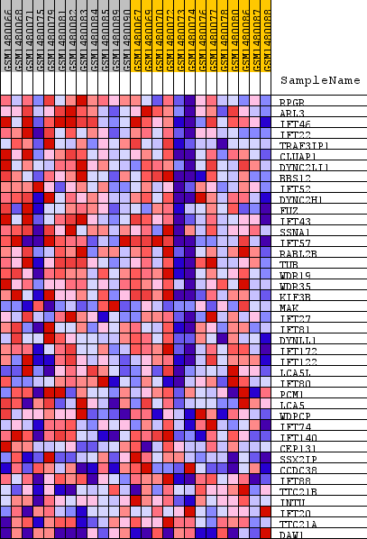
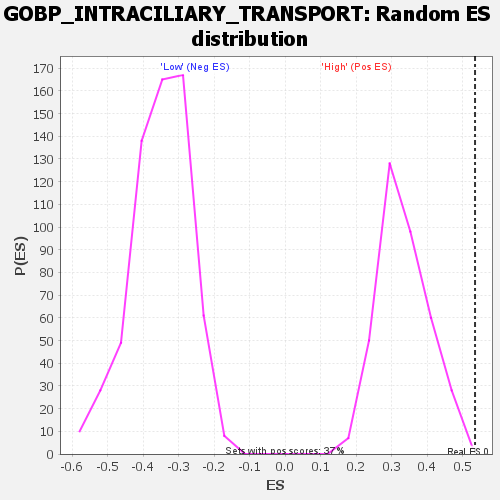

Profile of the Running ES Score & Positions of GeneSet Members on the Rank Ordered List
| Dataset | WG6v3.CPT1A.cls#High_versus_Low.CPT1A.cls#High_versus_Low_repos |
| Phenotype | CPT1A.cls#High_versus_Low_repos |
| Upregulated in class | High |
| GeneSet | GOBP_INTRACILIARY_TRANSPORT |
| Enrichment Score (ES) | 0.5346385 |
| Normalized Enrichment Score (NES) | 1.6056137 |
| Nominal p-value | 0.0026737968 |
| FDR q-value | 1.0 |
| FWER p-Value | 1.0 |
| SYMBOL | TITLE | RANK IN GENE LIST | RANK METRIC SCORE | RUNNING ES | CORE ENRICHMENT | |
|---|---|---|---|---|---|---|
| 1 | RPGR | RPGR | 459 | 0.101 | 0.0454 | Yes |
| 2 | ARL3 | ARL3 | 715 | 0.085 | 0.0900 | Yes |
| 3 | IFT46 | IFT46 | 1023 | 0.072 | 0.1231 | Yes |
| 4 | IFT22 | IFT22 | 1113 | 0.069 | 0.1658 | Yes |
| 5 | TRAF3IP1 | TRAF3IP1 | 1163 | 0.068 | 0.2095 | Yes |
| 6 | CLUAP1 | CLUAP1 | 1168 | 0.068 | 0.2554 | Yes |
| 7 | DYNC2LI1 | DYNC2LI1 | 1461 | 0.060 | 0.2813 | Yes |
| 8 | BBS12 | BBS12 | 1695 | 0.055 | 0.3067 | Yes |
| 9 | IFT52 | IFT52 | 1766 | 0.053 | 0.3395 | Yes |
| 10 | DYNC2H1 | DYNC2H1 | 1782 | 0.053 | 0.3749 | Yes |
| 11 | FUZ | FUZ | 1872 | 0.051 | 0.4055 | Yes |
| 12 | IFT43 | IFT43 | 2478 | 0.042 | 0.4031 | Yes |
| 13 | SSNA1 | SSNA1 | 2623 | 0.040 | 0.4233 | Yes |
| 14 | IFT57 | IFT57 | 2724 | 0.039 | 0.4450 | Yes |
| 15 | RABL2B | RABL2B | 2797 | 0.038 | 0.4675 | Yes |
| 16 | TUB | TUB | 3317 | 0.033 | 0.4630 | Yes |
| 17 | WDR19 | WDR19 | 3440 | 0.031 | 0.4782 | Yes |
| 18 | WDR35 | WDR35 | 3503 | 0.031 | 0.4962 | Yes |
| 19 | KIF3B | KIF3B | 3825 | 0.028 | 0.4989 | Yes |
| 20 | MAK | MAK | 3958 | 0.027 | 0.5105 | Yes |
| 21 | IFT27 | IFT27 | 4120 | 0.026 | 0.5197 | Yes |
| 22 | IFT81 | IFT81 | 4201 | 0.025 | 0.5328 | Yes |
| 23 | DYNLL1 | DYNLL1 | 4470 | 0.023 | 0.5346 | Yes |
| 24 | IFT172 | IFT172 | 6614 | 0.011 | 0.4317 | No |
| 25 | IFT122 | IFT122 | 6638 | 0.011 | 0.4380 | No |
| 26 | LCA5L | LCA5L | 6651 | 0.011 | 0.4449 | No |
| 27 | IFT80 | IFT80 | 7293 | 0.008 | 0.4176 | No |
| 28 | PCM1 | PCM1 | 8261 | 0.005 | 0.3713 | No |
| 29 | LCA5 | LCA5 | 8677 | 0.004 | 0.3525 | No |
| 30 | WDPCP | WDPCP | 9452 | 0.002 | 0.3137 | No |
| 31 | IFT74 | IFT74 | 9618 | 0.001 | 0.3060 | No |
| 32 | IFT140 | IFT140 | 9626 | 0.001 | 0.3063 | No |
| 33 | CEP131 | CEP131 | 10059 | -0.000 | 0.2842 | No |
| 34 | SSX2IP | SSX2IP | 10644 | -0.002 | 0.2554 | No |
| 35 | CCDC38 | CCDC38 | 10978 | -0.003 | 0.2402 | No |
| 36 | IFT88 | IFT88 | 11204 | -0.004 | 0.2312 | No |
| 37 | TTC21B | TTC21B | 12869 | -0.009 | 0.1519 | No |
| 38 | INTU | INTU | 16197 | -0.034 | 0.0032 | No |
| 39 | IFT20 | IFT20 | 16383 | -0.036 | 0.0182 | No |
| 40 | TTC21A | TTC21A | 18158 | -0.077 | -0.0207 | No |
| 41 | DAW1 | DAW1 | 18897 | -0.126 | 0.0271 | No |

